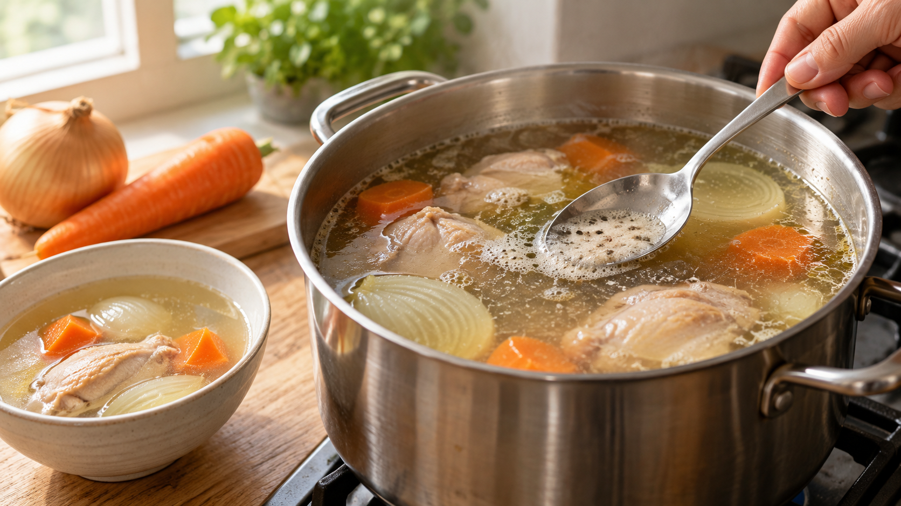

スープのあくを取ると透明になる？｜固まったたんぱく質と微粒子
鶏肉と野菜のスープを煮ていると、表面に灰色がかった泡が浮いてくる。これを取れば、汁は透明になるのだろうか。
浮いた泡をすくうと、目立つかたまりを減らせる。ただし、あく取りだけで必ず透き通るわけではない。 澄んだ見た目にしたいときの、ひとつの手順として考えよう。
肉を水から温めると、肉から水へ出た成分の一部が熱で固まり、汁から分かれる。表面に集まったものが、あくの一部になる。泡には脂なども混ざるので、すべてが同じ成分ではない。牛肉のスープを調べた資料とあくの成分を調べた資料が、この変化を支えている。
研究で確認されたのは、肉から出たたんぱく質の一部が、加熱後のあくに含まれること。一方、鶏のスープで加熱温度を変えた研究では、たんぱく質の量は変わっても、透明さに明らかな差は出なかった。この研究は、あく取りの有無を直接比べたものではない。鶏のスープを調べた資料
つまり、表面のかたまりをすくうのは、目に見える浮遊物を減らすための家庭での工夫だ。汁の中の細かな濁りや油の粒まで全部なくなるとは限らない。あく取りを「毒を抜くため」と考えたり、味や栄養が必ず良くなると期待したりする根拠も、今回確認した資料にはない。
鶏と野菜のスープ（2人分）
材料
- 鶏もも肉：200g
- 玉ねぎ：1/2個
- にんじん：1/2本
- 水：700ml
- 塩：少量
作り方
- 玉ねぎとにんじんを一口大に切る。鶏肉は洗わず、必要なら一口大に切り、水と野菜とともに鍋へ入れる。
- 中火にかける。表面にまとまった泡が浮いたら、おたまでそっとすくう。細かな泡を追いかけて汁を大量に捨てる必要はない。
- 火を弱めて穏やかに煮る。15分ほどを目安にしつつ、鶏肉の厚い部分が中心75℃以上で1分以上加熱されたことを温度計で確かめる。肉の厚さで必要な時間は変わる。農林水産省の案内
- 鶏肉と野菜を静かに取り出す。澄んだ見た目にしたければ、汁を目の細かいざるでこしてから、肉と野菜を器に戻す。最後に塩で味を調える。
この考え方は、肉入りのポトフにも応用できる。見た目をすっきりさせたいなら、表面に集まったものをすくう。具だくさんの煮込みなら、毎回すくう必要があるかを、仕上げたい見た目で決めればいい。これは家庭料理への応用で、ポトフの透明さを研究で直接確かめた結果ではない。
あく取りは、鍋の表面に集まったものを取り除き、見た目を整える方法のひとつ。次に澄んだスープを作るときは、浮いたかたまりをそっとすくい、仕上げに汁をこしてみよう。